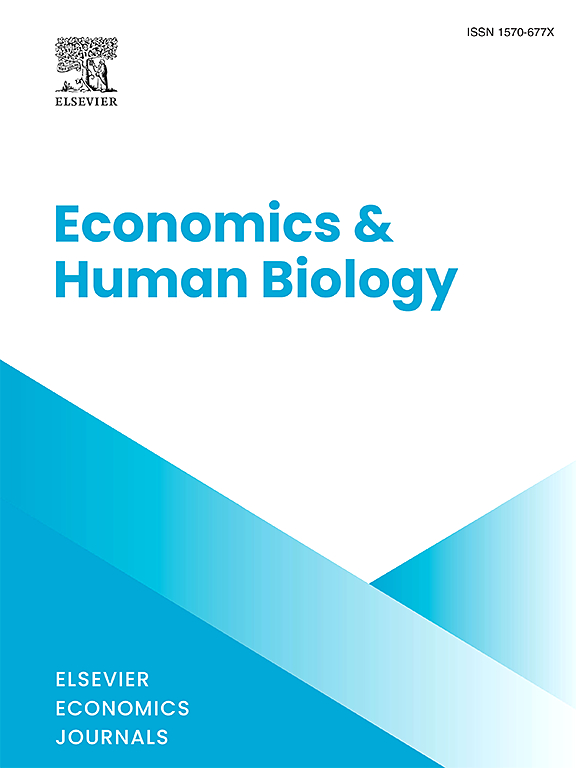

Mingyu Shu
Economics · Causal Inference · Human Behavior
Quantitative HistoryGenetic EconomicsPolitical & Development EconomicsTokenomics

Economics · Causal Inference · Human Behavior
I am an undergraduate student in Financial Engineering at Hefei University of Economics. I am always happy to receive feedback, criticism, or the chance to collaborate.
A selection of my work — from historical natural experiments to the incentive design of decentralized markets.

Open resources I compiled while learning. Everything here is free to download.


I am still a student of experimental economics, and these reading lists are my attempt to make sense of a literature far larger than myself.


I am still a student of econometric methods, and these materials are my working notes. I compiled them while trying to teach myself techniques that are far more sophisticated than anything I can claim to have mastered. Errors and omissions are mine alone.

Causal forests allow researchers to discover heterogeneous treatment effects without imposing functional form assumptions. I am still learning this method, and these slides are my attempt to organize what I have understood so far.

Local projections, introduced by Jordà (2005), offer a flexible alternative to VARs for estimating impulse responses. I have found them particularly useful for settings where the dynamic effects of a shock are the object of interest. These slides are my notes from learning the method.

The Least Absolute Shrinkage and Selection Operator (LASSO) is a workhorse of high-dimensional econometrics. I am only beginning to understand its theoretical properties, and these slides reflect my limited understanding so far.

Mendelian randomization uses genetic variants as instrumental variables to estimate causal effects. It sits at the intersection of economics and genetics — two fields I am trying to bridge in my own work. I am very much a beginner here, and these slides are my study notes.

Economic history is a field of staggering depth and complexity. I am only beginning to find my way through it, and these reading lists reflect my own limited perspective.


Research is not all there is. These are the things that keep me grounded, curious, and occasionally awake at night.

I am a humble home barista, not a professional. These notes reflect my own trial-and-error learning. I prefer pour-over and hand-grinding — the ritual is half the pleasure.


I play Go at a humble level, but I love the game deeply. Below are some joseki (formations) I have studied.


I am, without apology, a LeBron James fan. Not because he is the greatest basketball player of all time — though I believe he is — but because of what his story represents.
LeBron was born to a single sixteen-year-old mother in Akron, Ohio. He grew up moving from apartment to apartment, sometimes missing months of school at a time. The odds of a kid from that background becoming anything — let alone one of the most dominant athletes in history — were vanishingly small. And yet he did it, not through luck alone, but through a discipline and work ethic that has never wavered over more than two decades in the NBA.
What moves me most is not the championships or the records, but the consistency. Year after year, season after season, LeBron has shown up. He has taken care of his body with a scientific rigor that borders on obsession. He has adapted his game as he aged, from the explosive athleticism of his youth to the cerebral playmaking of his later years. He has spoken out on social issues when it would have been easier to stay silent. He built a school in his hometown.
And then there is the humor. For all his intensity, LeBron has never lost his sense of playfulness on the court — the exaggerated celebrations, the impromptu dance moves, the way he grins after a ridiculous pass. I have learned from him that even in the most high-pressure moments, it is okay to laugh, to enjoy yourself, to not take everything so seriously. I try to bring that spirit into my own work: when the data won't cooperate or the code keeps breaking, sometimes the best thing to do is step back and smile. LeBron shows that greatness and joy are not opposites — they are companions.
As a student who often feels overwhelmed by how much there is to learn, I find LeBron's example deeply encouraging. He shows that greatness is not a single moment of brilliance but a lifetime of showing up, doing the work, and refusing to settle. I will never be the LeBron James of economics — but I can try to show up every day and give my best effort. That is the lesson I take from him.


Music is the soundtrack of my life. I listen while I code, while I read, while I grind coffee, and while I stare at regression outputs that refuse to be significant.


Whether you have feedback on my work, want to collaborate, or just want to chat about coffee, Go, or LeBron James, I would love to hear from you.
Send Email →